Designing a banking experience where conversation became the interface.
Exploring how conversational UX and IBM Watson could simplify everyday banking interactions while laying the foundation for a future AI-powered banking experience.
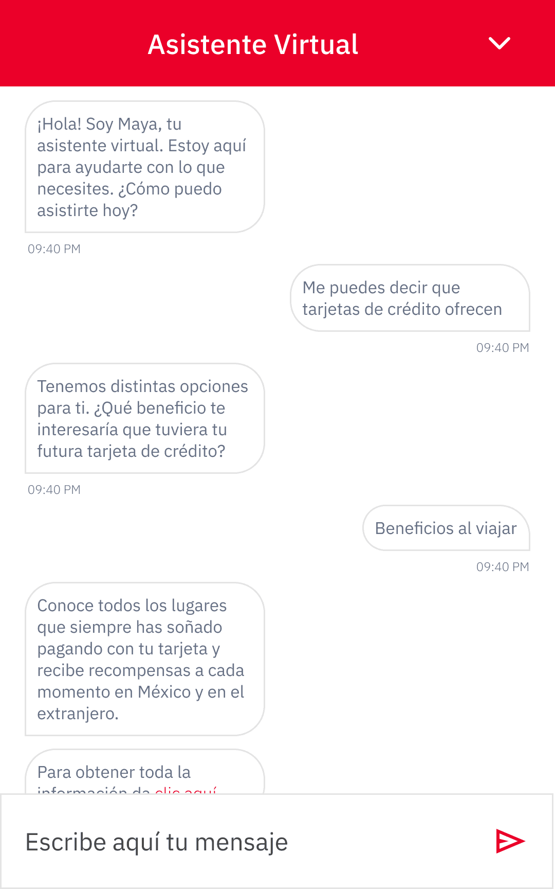
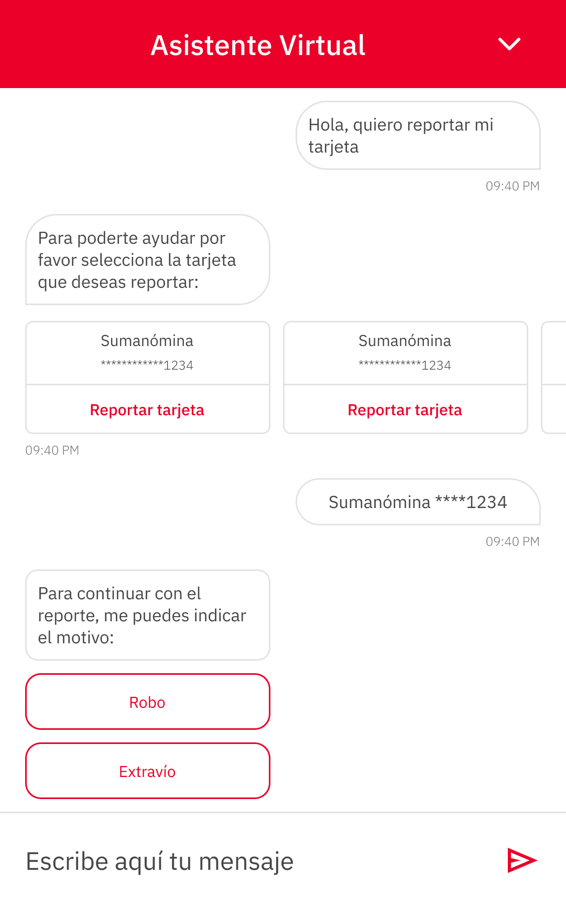

Overview
A first step toward AI-powered banking.
The bank was already an IBM client and was exploring a broader vision for the future of its digital experience: using artificial intelligence to support customers across multiple channels.
Maya began as the first step toward that vision.
The initial product focused on a mobile conversational experience where customers could interact with an AI-powered assistant to get information and complete selected banking tasks. Starting with a single channel also created an opportunity to learn how customers interacted with the technology and build a foundation that could potentially expand to other banking channels over time.
The vision
Start with a conversation. Learn. Then expand.
The long-term vision went beyond creating a single chatbot. The mobile experience was intended as an initial environment for exploring how AI could support banking interactions, understanding how users communicated with the system, and learning how the technology could evolve before expanding the experience to additional channels.
The first conversational experience
Maya started as a conversational assistant within mobile banking.
Understand user behavior and AI interactions
Observe how customers communicated with the system and where AI could add value.
Improve the experience and expand capabilities
Use those learnings to refine the experience and support new tasks.
Potential future use across other banking channels
Explore bringing the experience beyond mobile over time.
Maya began as the first step toward a broader AI-powered banking vision.
Product strategy
From answering questions to taking action.
Maya was designed to evolve in two phases.
The first focused on helping customers understand banking concepts and products.
The second introduced selected transactional capabilities, moving the experience from informational conversations toward actions involving the customer's own financial accounts.
Informational
Helping customers understand banking products and concepts.
Examples- What is a credit card?
- What is a debit card?
- How does interest work?
- What types of cards are available?
Transactional
Helping customers complete selected banking tasks.
Examples- Check account balances
- Transfer between accounts
- Transfer to third parties
- Report a lost or stolen credit card
The shift from answering questions to supporting transactions fundamentally changed the design challenge.
My role
Designing the experience between people and AI.
I worked as a UX Designer as part of a multidisciplinary team of four designers.
We collaborated with business analysts, developers, and IBM Watson AI specialists to connect user needs, banking requirements, conversational flows, and the capabilities of the underlying technology.
- User flows
- Conversational flows
- Wireframes
- Mobile interface design
- Interaction patterns
- Tone and personality
- Design Thinking workshop co-facilitation
- Design team, shaping different parts of the experience
- Business analysts, on banking processes and requirements
- Development team, turning the experience into a functional product
- IBM Watson AI specialists, on the technology's capabilities and constraints
My role was not to build the AI model, but to understand the technology well enough to design meaningful interactions around what it could and could not do.
The challenge
The interface was only part of the experience.
At first glance, Maya looked like a relatively simple mobile chat interface.
But arranging messages on a screen was not the hardest part.
The experience depended on what happened behind each interaction: how users expressed their intentions, how the system interpreted them, what information was still missing, how the conversation moved forward, and what happened when the AI could not confidently understand a request.
Designing Maya required moving beyond traditional screens and learning how to design the conversation itself.
The path is defined by screens.
The path is shaped by language.
In a conversational interface, the path is not always defined by screens. It is shaped by language, context, and the information available at each moment.
Discovery
Understanding the problem before designing the conversation.
Before defining how Maya should interact, the team explored users, their banking needs, and the moments where a conversational experience could provide meaningful value.
Because conversational AI was still a relatively unfamiliar design space, the work required exploration beyond traditional interface design.
Design Thinking workshops
Co-facilitating sessions to explore the problem space and align different perspectives.
Personas
Grounding the experience in user goals, needs, and pain points.
Customer journey
Identifying moments where conversation could add real value.
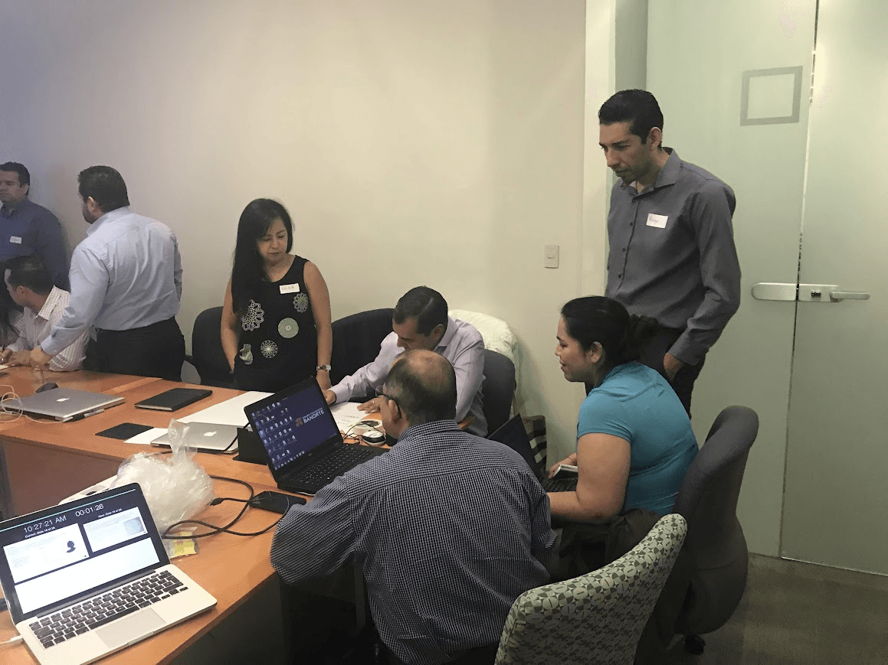
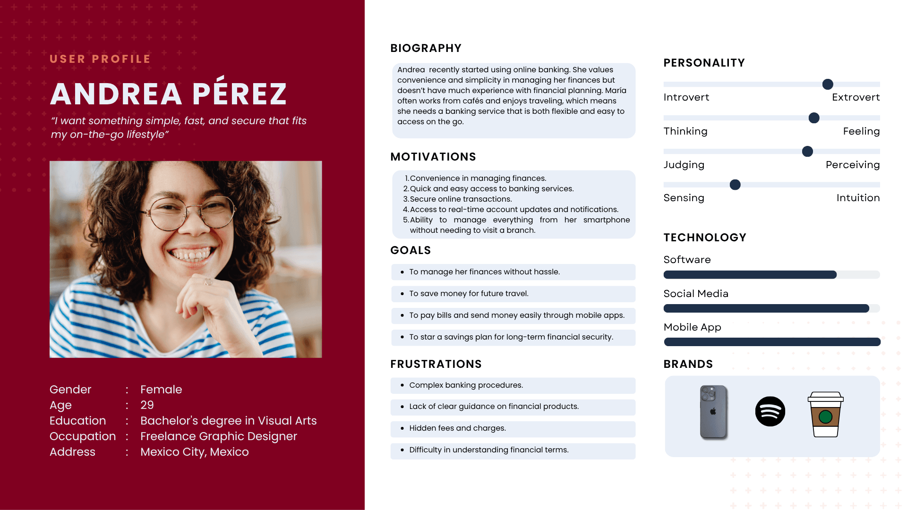
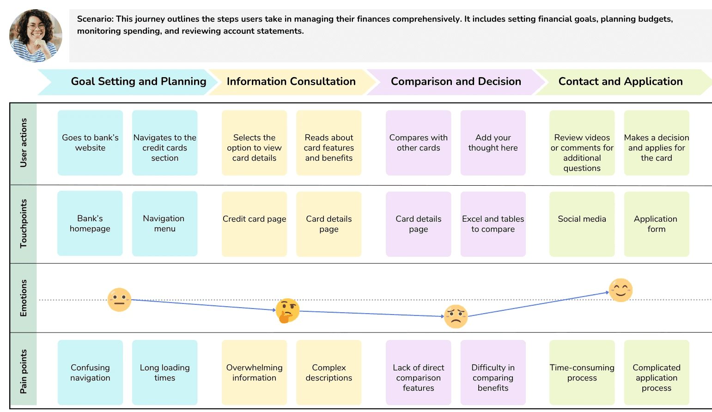
Rather than asking where AI could be added, the goal was to identify situations where conversation could provide a simpler path to information or action.
AI + UX
Learning enough about the technology to design with it.
Designing Maya required close collaboration between the UX team and IBM Watson specialists.
As designers, we needed to understand how the technology interpreted language and how different ways of expressing the same goal could affect the experience.
We were not building the underlying AI model, but understanding its capabilities helped us design conversations that were realistic, useful, and aligned with what the system could support.
One goal. Many ways to express it.
A customer could communicate the same intention using different words and levels of detail. Understanding this relationship between language and user intent became important when designing how Maya should respond and what information was still needed to move the conversation forward.
Different words
- I want to send money
- Can you make a transfer?
- Transfer $500 to Ana
One intent
Transfer money
Continue the conversation
- Ask only for missing details
- Confirm what is already known
- Move toward the action
Designing the UX around user intent rather than a single predefined sentence.
Conversational UX
A task is not automatically a conversation.
Traditional banking flows provided a starting point, but moving those tasks into a chat required a different way of thinking.
A user could begin with incomplete information, provide details in an unexpected order, ask for clarification, or express the same request in multiple ways.
Each conversational flow needed to consider what Maya already knew, what information was missing, and how to guide the user forward without making the interaction feel unnecessarily rigid.
The user starts with a goal: "I want to make a transfer."
Maya identifies missing information, such as recipient or amount.
The conversation collects only what is needed.
Maya summarizes the transaction details before confirmation.
The user confirms and the transaction proceeds.
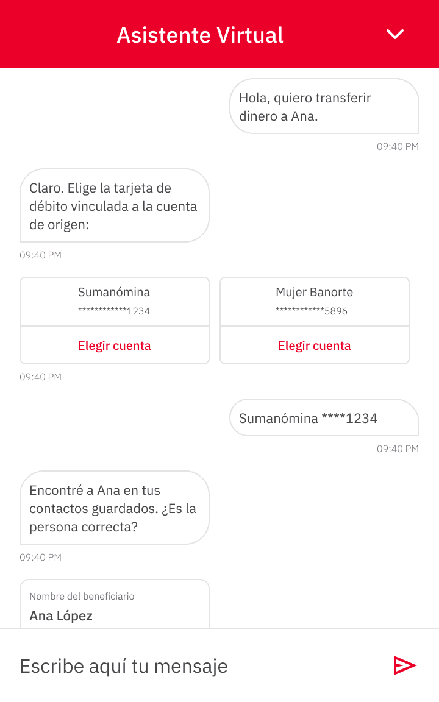
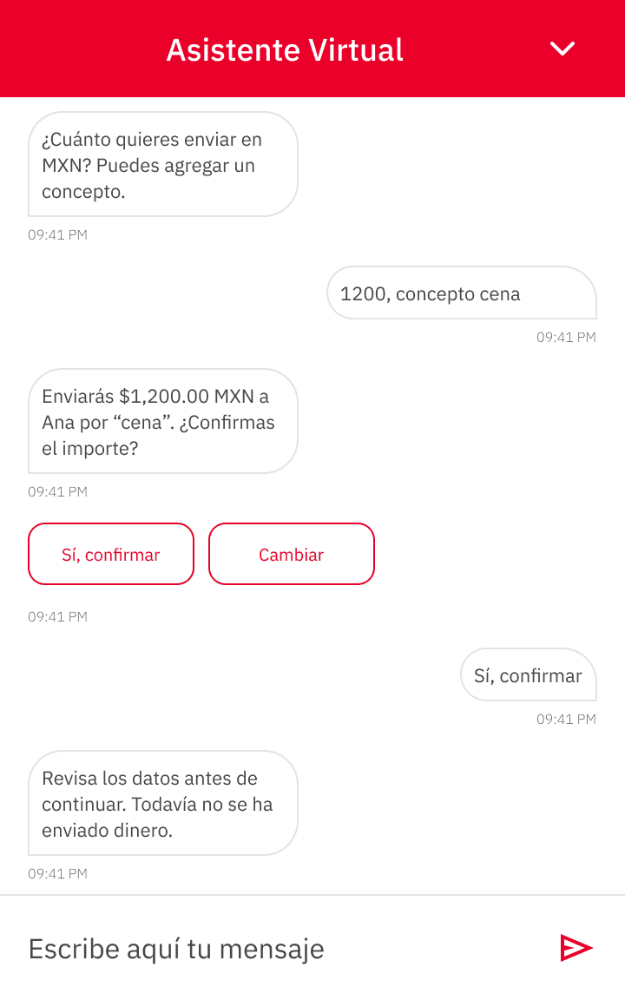
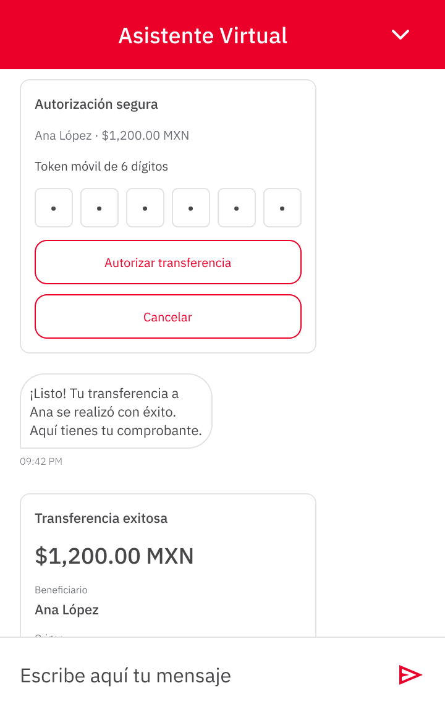
Translating a traditional banking task into a conversation that could adapt to the information available at each step.
Tone & personality
A helpful assistant needs more than correct answers.
A technically correct response was not enough to create a meaningful conversational experience.
Maya needed a consistent personality and communication style that could make interactions feel approachable and natural while remaining appropriate for a banking environment.
The name Maya was chosen to reflect a persona that cares for others, characterized by empathy, warmth, kindness, and strong social skills.
Human enough to feel natural. Clear enough to build trust.
Maya needed to feel approachable without pretending to be human or becoming overly casual in situations where clarity and confidence mattered more.
Maya
TraitsAdobe Creative Type
- Evaluated eight creative personas
- Identified traits that would resonate with users
- Defined how Maya should communicate
Approachable, not casual
Consistent across- Informational questions
- Transactional actions
- Moments of uncertainty
Maya's personality was defined to feel approachable while remaining appropriate for a banking environment.
Tone in practice
Personality becomes real through interaction.
Tone and personality were not intended to exist only as abstract principles. They needed to be reflected in the actual moments users experienced throughout the conversation.

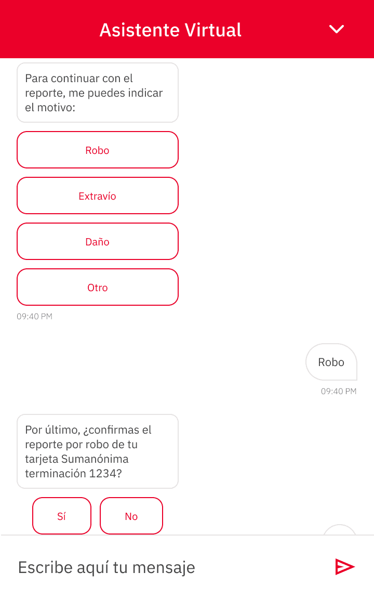
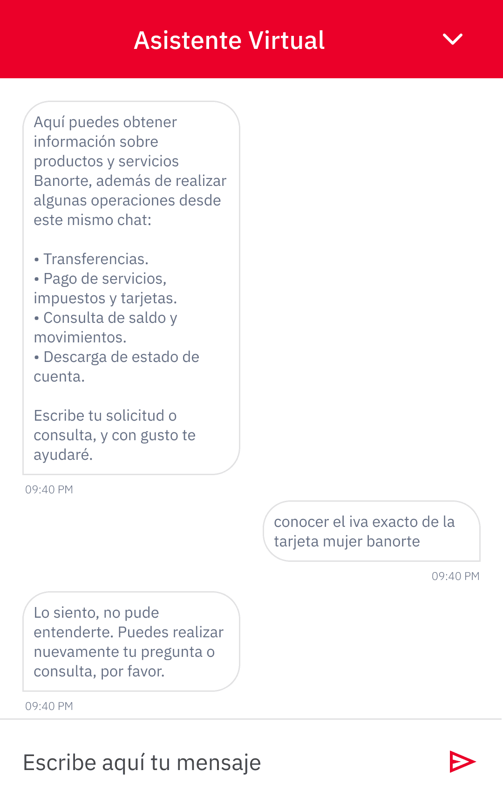
The experience needed to remain consistent across information, action, and uncertainty.
Interaction design
Keeping the conversation at the center.
Maya was designed primarily as a conversational experience, but text was not always the most efficient way to communicate information.
Cards and visual elements were introduced selectively when they could help users understand information or take the next step. The goal was to use enough interface to support the conversation without turning Maya into a traditional banking dashboard.
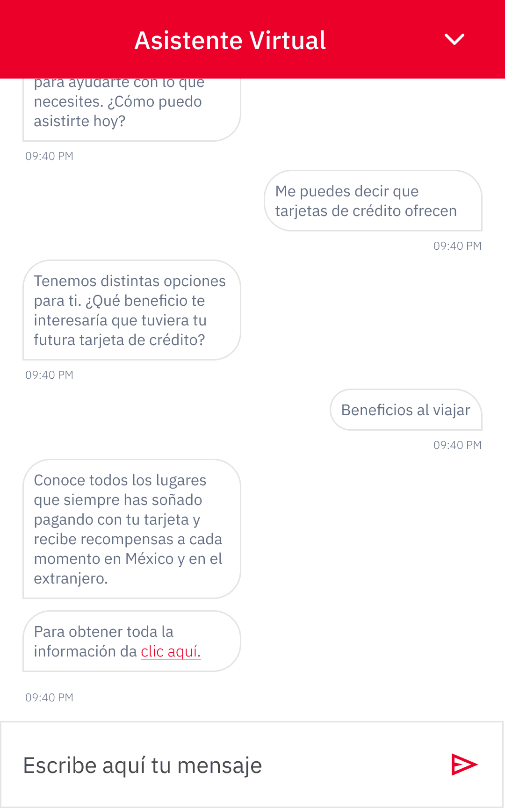
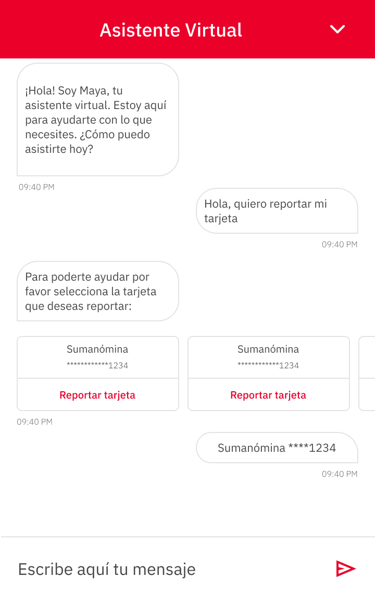
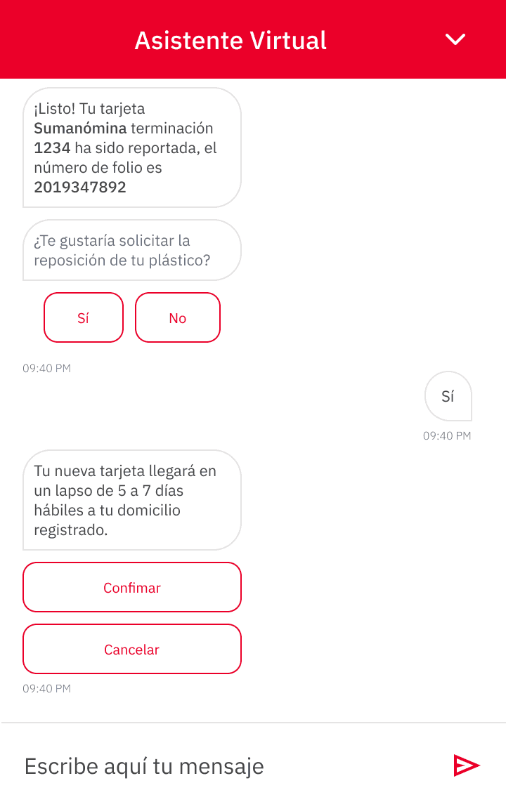
The goal was not to eliminate UI. It was to use it only when it improved the conversation.
Trust & confidence
A conversation can feel casual. Banking cannot.
The challenge changed as Maya moved from informational conversations toward financial transactions.
Actions involving accounts and money required users to clearly understand what was happening before a transaction was completed.
Conversational language needed to remain approachable, but the experience also needed to communicate important information clearly and avoid ambiguity around sensitive actions.
- Step 01
The user requests a transfer in their own words.
- Step 02
Maya presents the transaction details clearly before anything happens.
- Step 03
The user explicitly confirms before the transaction proceeds.
My role was not to define the bank's security architecture. I focused on how banking and security requirements shaped the interaction and how sensitive actions could be communicated clearly through the experience.
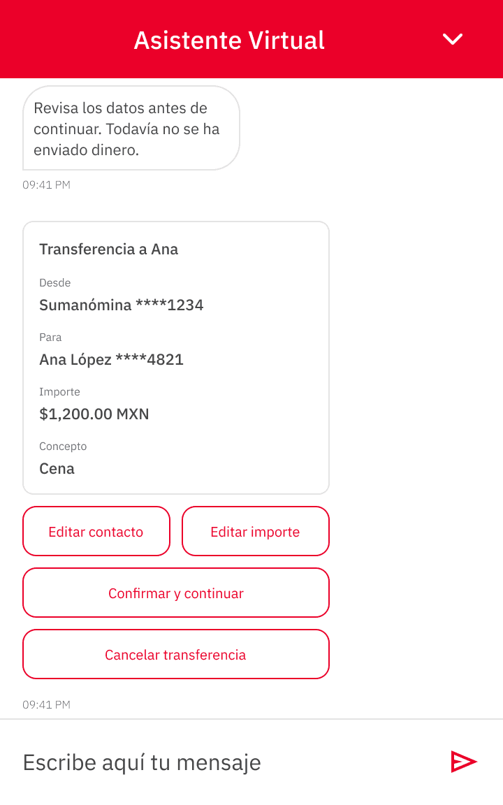
Designing for reality
The ideal conversation is not always the possible conversation.
Designing Maya also meant working within the capabilities and limitations of the technology.
Users could ask unexpected questions, provide incomplete information, or communicate in ways the system could not confidently interpret. The UX needed to account for those moments and help users recover when the expected path was no longer possible.
The conversation continues.
The conversation recovers.
Designing not only for successful conversations, but also for moments where the system needed help, clarification, or recovery.
The product
What Maya could help customers do.
Maya brought together informational and transactional interactions in a mobile conversational experience.

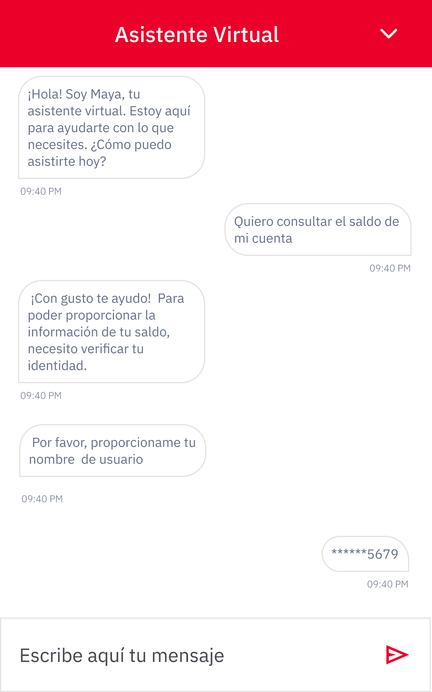
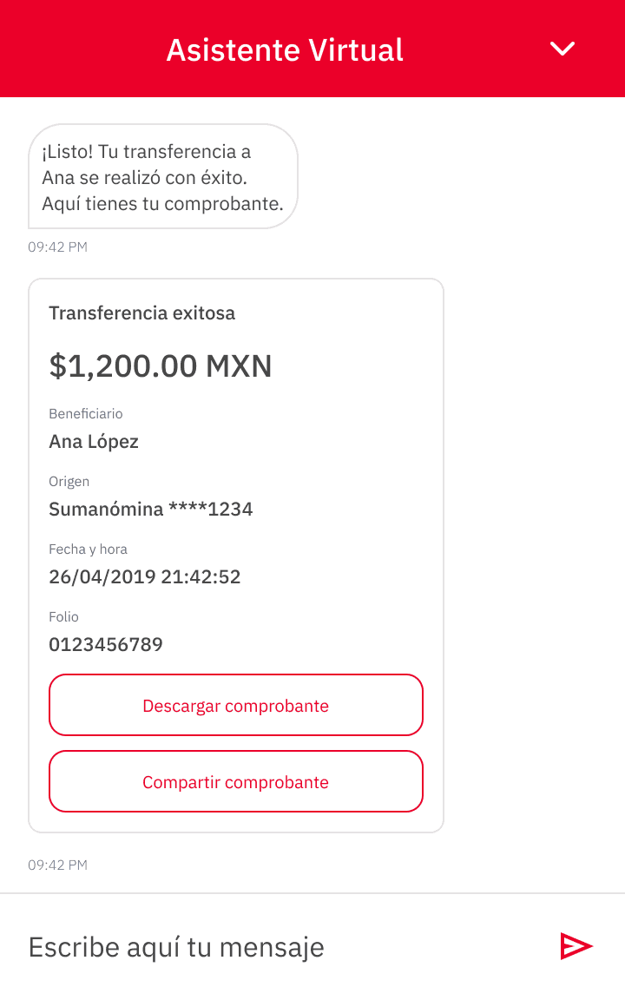

Iteration
Designing the behavior before polishing the interface.
Because the complexity of Maya lived primarily in the interaction rather than the visual interface, early wireframes helped explore how conversations, supporting UI, and user actions could work together before refining the final experience.
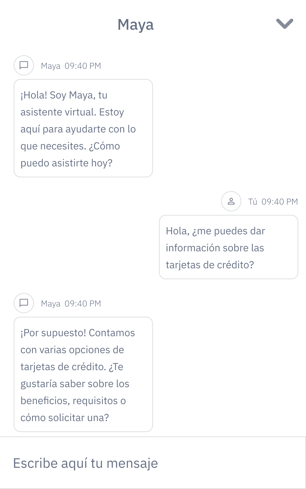
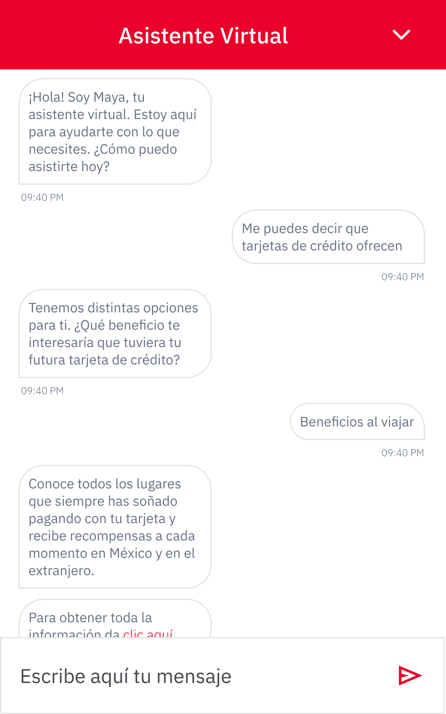
Outcome
Exploring a new way to interact with banking services.
Conversation became a new interaction model
The project explored how selected banking tasks could move beyond traditional menus and navigation into a conversational experience.
UX and AI had to be designed together
Understanding the capabilities of IBM Watson became an essential part of shaping realistic conversational flows.
The assistant required a product personality
Tone, language, interaction patterns, and supporting UI all contributed to how Maya was experienced.
A foundation for future learning
Starting with a mobile conversational experience created an environment for exploring how AI could support banking interactions and potentially evolve into a broader multichannel experience.
Reflection
What Maya taught me about designing with AI.
Maya taught me that designing with AI is not primarily about designing an interface for the technology. The real challenge is understanding where technology can support a user and translating those capabilities into interactions that feel clear, useful, and human.
It also changed the way I thought about user flows. In a traditional interface, designers can control much of the path through navigation and screens. In a conversational experience, users can enter the interaction from many different directions.
Designing for that uncertainty required thinking beyond screens and focusing on intent, context, language, personality, and recovery.
While the technology behind Maya has evolved significantly since the project began, the core design challenge remains relevant:
How do we make intelligent systems useful without making users adapt to the technology?